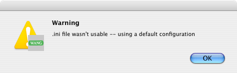

WangEmu Quick Start Guide
This is a brief how-to guide in getting up and running quickly with WangEmu. There are many configuration options and two major operating modes; besides, being a faithful emulator, WangEmu is bounded by the complexity that was inherent in the Wang 2200 system itself.
The first two sections, of course, are largely irrelevant if this help is being run from WangEmu's help file itself of course.
Unpacking the .dmg file
The application and its associated files are distributed in a standard .dmg file called "WangEmu_2.1.dmg". Place this file anywhere, for example right on the desktop. Wherever the file is located, double click the icon and a virtual disk drive image will appear mounted on the desktop. Double click on that image and inside is a folder called "WangEmu2.1". Double click on the folder to see the contents.
The folders called disks and scripts contain programs that can be loaded by the emulator to give you something to play with right off the bat.
Launching WangEmu for the first time
The application can be run by double clicking on the executable called "WangEmu" in the folder that was created when the downloaded file was unpacked.
The first time WangEmu is run, an warning message will appear:

This is normal and can be ignored. It is simply indicating that the file containing the user's preferences couldn't be found. If this message appears after the emulator is configured, it is an indication that something is amiss, such as the file couldn't be saved after the first run because the user doesn't have write permission.
The default configuration is to have
- a 2200T CPU
- a 64x16 CRT at /005
- a keyboard at /001
- a dual disk drive at /310
- a printer at /215
Every time WangEmu exits, all the users preferences are saved in a file called wangemu.ini. It is an ASCII text file, but it should not be directly edited otherwise the configuration might get corrupted; if so, delete the file and reconfigure the emulator as if it was the first time the emulator was run. This file is located in ~/Library/Preferences.
Configuring for 2200 VP Mode
The default configuration comes up in 2200T mode, which has Wang BASIC in ROM. The emulator is ready to run programs.
If the user prefers a 2200 VP configuration running Wang BASIC-2, a few more steps are required.
From the Configure menu item, select Configure System.... There is a choice box in the upper left corner that reads "CPU: 2200T". Change that to read "CPU: 2200VP". Click the OK button.
Unlike the first generation machines, the VP series didn't have BASIC in ROM. Instead, the BASIC-2 microcode had to be loaded from disk. The same is true for the emulator.
- From the Disk menu, select Drive F/310: Insert. A standard dialog box for selecting a file should appear.
- Navigate into the "disks" subdirectory of wherever the emulator was installed.
- Select the disk vp-boot-2.3.wvd.
- Perform a warm reset of the machine, just like a real machine.
One way to do it is to open the CPU menu and select the
Warm Reset CPU item.
You should now see a prompt that reads
KEY SF'?
This prompt allows triggering a load of one of a handful of microcode images from one of a number of disk drives. - For our purpose, we want Special Function key 0, which can be triggered
by hitting the ESC key. After a few seconds you should see
Loading: VP BASIC-2 Release 2.3
then a few seconds later,
READY (BASIC-2)
:_
You are now ready to run some BASIC-2 programs.
Loading a Script
At this point you may type some commands or enter an entire program. WangEmu comes with some program sources to demonstrate some features of Wang BASIC or to simply allow having some fun.
To load a script (which works by reading an ASCII file and having the emulator pretend the user is a really fast typist), follow these steps.
- Open the File menu and select the Script... item. A standard file dialog box will appear.
- Navigate to the "scripts" subdirectory of wherever the emulator was installed.
- Select a program; for example, chose primes.w22. Very rapidly the screen should fill with the text of the program that was just selected.
- When the program is done being read in, type RUN and hit ENTER to start running the chosen program.
- To halt the program you can reset the machine (from the CPU menu) or you can hit the emulated HALT/STEP key. On the PC this is the Break key; on the Mac this is Ctrl+ESC.
You can create your own script files with any text editor that can produce an ASCII file. Simply type in the program and use the File/Script... feature.